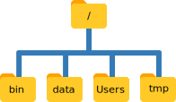
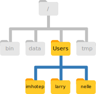
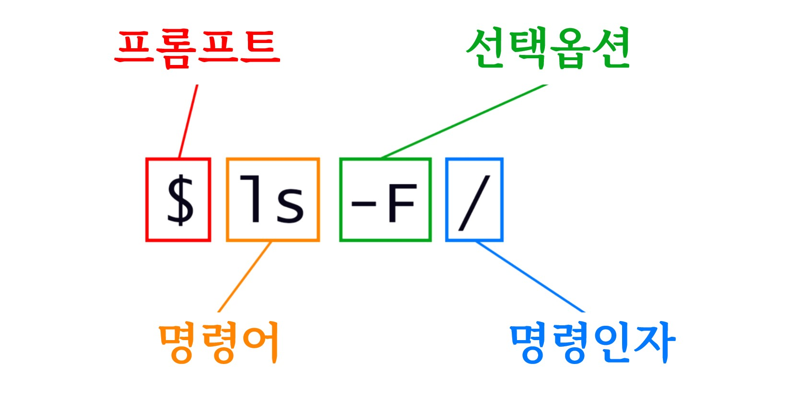

4 파일과 폴더 넘나들기
knitr::opts_chunk$set(engine.opts = list(bash = "-l"))파일과 디렉토리 관리를 담당하고 있는 운영체제 부분을 파일 시스템(file system)이라고 한다. 파일 시스템은 데이터를 정보를 담고 있는 파일과 파일 혹은 다른 디렉토리를 담고 있는 디렉토리(혹은 “폴더”“)로 조직화한다.
파일과 디렉토리를 생성, 검사, 이름 바꾸기, 삭제하는데 명령어 몇개가 자주 사용된다. 명령어를 살펴보기 위해, 쉘 윈도우를 연다:
먼저, pwd 명령어를 사용해서 위치를 찾아낸다; pwd는 “print working directory”를 의미한다. 디렉토리는 장소(place) 같다 - 쉘을 사용할 때마다 정확하게 한 장소에 위치하게 되는데, 이를 현재 작업 디렉토리(current working directory)라고 부른다. 명령어 대부분은 현재 작업 디렉토리에 파일을 읽고 쓰는 작업을 “이곳(here)”에 수행한다. 그래서 명령어를 실행하기 전에 현재 위치가 어디인지 파악하는 것이 중요하다. pwd 명령어를 숳애하게 되면 현재 위치를 다음과 같이 보여주게 된다:
$ pwd
/Users/nelle다음에서, 컴퓨터의 응답은 /Users/nelle으로 넬(Nelle)의 홈 디렉토리(home directory)다:
홈 디렉토리(Home Directory) 변종
홈 디렉토리 경로는 운영체제마다 다르게 보인다. 리눅스에서 /home/nelle 처럼 보이고, 윈도우에서는 C:\Documents and Settings\nelle, C:\Users\nelle와 유사하게 보인다. (윈도우 버젼마다 다소 차이가 있을 수 있음에 주목한다.) 다음 예제부터, 맥OS 출력결과를 기본설정으로 사용할 것이다; 리눅스와 윈도우 출력결과에 다소 차이가 날 수 있지만, 전반적으로 유사하다.
“홈 디렉토리(home directory)”를 이해하기 위해서, 파일 시스템이 전체적으로 어떻게 구성되었는지 살펴보자. 최상단에 다른 모든 것을 담고 있는 루트 디렉토리(root directory)가 있다. 슬래쉬 / 문자로 나타내고, /users/nelle에서 맨 앞에 슬래쉬이기도 하다.
Nelle 과학자 컴퓨터의 파일시스템을 사례로 살펴보자. 시연을 통해서 유사한 방식으로 (하지만 정확하게 동일하지는 않지만) 본인 컴퓨터 파일시스템을 탐색하는 명령어를 학습하게 된다.
넬 과학자 컴퓨터의 파일 시스템은 다음과 같다:

최상단에 다른 모든 것을 담고 있는 루트 디렉토리(root directory)가 있다. 슬래쉬 / 문자로 나타내고, /users/nelle에서 맨 앞에 슬래쉬이기도 하다.
홈 디렉토리 안쪽에 몇가지 다른 디렉토리가 있다: bin (몇몇 내장 프로그램이 저장된 디렉토리), data (여러가지 데이터 파일이 저장된 디렉토리), Users (사용자의 개인 디렉토리가 저장된 디렉토리), tmp (장기간 저장될 필요가 없는 임시 파일을 위한 디렉토리), 등등:
현재 작업 디렉토리 /Users/nelle는 /Users 내부에 저장되어 있다는 것을 알고 있는데, 이유는 /Users가 이름 처음 부분이기 때문에 알 수 있다. 마찬가지로 /Users는 루트 디렉토리 내부에 저장되어 있다는 것을 알 수 있는데, 이름이 /으로 시작되기 때문이다.
슬래쉬(Slashes)
슬래쉬 / 문자는 두가지 의미가 있는 것에 주목한다. 파일 혹은 디렉토리 이름 앞에 나타날 때, 루트 디렉토리를 지칭하게 되고, 이름 가운데 나타날 때, 단순히 구분자 역할을 수행한다.
/Users 하단에서 Nelle 과학자 컴퓨터 계정과, 랩실 동료 미이라(Mummy)와 늑대인간(Wolfman) 디렉토리를 볼 수 있다.

미이라(Mummy) 파일은 /Users/imhotep 디렉토리에 저장되어 있고, 늑대인가(Wolfman)의 파일은 /Users/larry 디렉토리에 저장되어 있고 /Users/nelle 디렉토리에 nelle의 정보가 저장되어 있는데, 이것이 왜 nelle이 디렉토리 이름의 마지막 부분인 이유다. 일반적으로 명령 프롬프트를 열게 되면, 처음 시작하는 곳이 본인 계정 홈 디렉토리가 된다.
본인 파일시스템에 담긴 내용물을 파악하는데 사용하는 명령어를 학습해 보자. (Nelle의 홈 디렉토리에 무엇이 있는지 ls 명령어를 실행해서 살펴보자.) ls는 “목록보기(listing)”를 나타낸다:
$ ls
Applications Documents Library Music Public
Desktop Downloads Movies Pictures(다시 한번, 본인 컴퓨터 운영체제와 파일시스템을 취향에 따라 바꿨는지에 따라 출력결과는 다소 다를 수 있다.)
ls는 알파벳 순서로 깔끔하게 열로 정렬하여 현재 디렉토리에 있는 파일과 디렉토리 이름을 출력한다. 플래그(flag) -F(스위치(switch) 혹은 옵션(option)으로도 불린다)를 추가하여 출력을 좀더 이해하기 좋게 출력괄를 생성할 수도 있다. ls으로 하여금 디렉토리 이름 뒤에 /을 추가하게 일러준다: 끝에 붙은 /은 디렉토리라는 것을 지칭한다. 설정에 따라 달라지도록 파일이냐 디렉토리냐에 따라 다른 색상을 입힐 수도 있다. 앞선 학습에서 ls -F 명령어를 사용한 것을 상기한다.
$ ls -F
Applications/ Documents/ Library/ Music/ Public/
Desktop/ Downloads/ Movies/ Pictures/4.1 도움말 얻기
ls 명령어에 딸린 플래그가 많다. 일반적으로 명령어와 수반되는 플래그 사용법을 파악하는 방식이 두개 있다:
--help플래그를 명령어에 다음과 같이 전달하는 방법:
$ ls --helpman명령어로 다음과 같이 매뉴얼을 읽는 방법:
$ man ls 본인 컴퓨터 환경에 따라 상기 방법 중 하나만 동작(man 혹은 --help)할 수도 있다. 아래에서 두가지 방법 모두 살펴보자.
4.1.1 --help 플래그
배쉬 내부에서 동작하도록 작성된 배쉬 명령어와 프로그램은 --help 플래그를 지원해서 명령어 혹은 프로그램을 사용하는 방식에 대한 더 많은 정보를 볼 수 있게 해 준다.
$ ls --help
Usage: ls [OPTION]... [FILE]...
List information about the FILEs (the current directory by default).
Sort entries alphabetically if none of -cftuvSUX nor --sort is specified.
Mandatory arguments to long options are mandatory for short options too.
-a, --all do not ignore entries starting with .
-A, --almost-all do not list implied . and ..
--author with -l, print the author of each file
-b, --escape print C-style escapes for nongraphic characters
--block-size=SIZE scale sizes by SIZE before printing them; e.g.,
'--block-size=M' prints sizes in units of
1,048,576 bytes; see SIZE format below
-B, --ignore-backups do not list implied entries ending with ~
-c with -lt: sort by, and show, ctime (time of last
modification of file status information);
with -l: show ctime and sort by name;
otherwise: sort by ctime, newest first
... 중략
-X sort alphabetically by entry extension
-Z, --context print any security context of each file
-1 list one file per line. Avoid '\n' with -q or -b
--help display this help and exit
--version output version information and exit
The SIZE argument is an integer and optional unit (example: 10K is 10*1024).
Units are K,M,G,T,P,E,Z,Y (powers of 1024) or KB,MB,... (powers of 1000).
Using color to distinguish file types is disabled both by default and
with --color=never. With --color=auto, ls emits color codes only when
standard output is connected to a terminal. The LS_COLORS environment
variable can change the settings. Use the dircolors command to set it.
Exit status:
0 if OK,
1 if minor problems (e.g., cannot access subdirectory),
2 if serious trouble (e.g., cannot access command-line argument).
GNU coreutils online help: <http://www.gnu.org/software/coreutils/>
Full documentation at: <http://www.gnu.org/software/coreutils/ls>
or available locally via: info '(coreutils) ls invocation'지원되지 않는 명령-라인 선택옵션
지원되지 않는 선택옵션(플래그)를 사용하게 되면, ls를 비롯한 다른 프로그램은 다음과 같은 오류 메시지를 일반적으로 출력하게 된다:
$ ls -j
ls: invalid option -- 'j'
Try 'ls --help' for more information.4.1.2 man 명령어
ls에 대해 배울 수 있는 다른 방식은 다음 명령어를 타이핑하는 것이다.
$ man ls상기 명령어를 실행하게 되면 ls 명령어와 선택 옵션에 대해 기술된 페이지로 탈바꿈하게 된다. 만약 운이 좋은 경우 상용법에 대한 예제도 포함되어 있다.
man 페이지를 살펴보는 방법은 행단위로 이동하는데 ↑, ↓을 사용하거나 전체 페이지 단위로 건너뛰거나 아래 페이지로 이동할 경우 B, Spacebar을 사용한다. man 페이지에서 단어나 문자를 찾는 경우 / 다음에 검색할 문자 혹은 단어를 타이핑하면 된다.
man 페이지에서 빠져 나오고자 종료(quit)하고자 한다면 Q을 누른다.
웹상의 매뉴얼 페이지
물론 명령어에 대한 도움말에 접근하는 세번째 방식이 있다: 웹브라우저를 통해서 인터넷을 검색하는 것이다. 인터넷 검색을 이용할 때, 검색쿼리에 unix man page 문구를 포함할 경우 연관된 정보를 찾는데 도움이 될 수 있다.
GNU도 GNU 핵심 유틸리티(core GNU utilities)이 포함된 매뉴얼을 제공하고 있는데 이번 학습에 소개된 많은 명령어를 망라하고 있다.
더많은 ls 플래그 탐색
-l, -h 플래그를 붙여 ls 명령어를 수행하게 되면 출력결과는 어떻게 나올까?
출력결과의 일부는 이번 학습에서 다루지 않는 속성(property)에 대한 것으로 파일 권한과 파일 소유에 대한 것이다. 그럼에도 불구하고 나머지는 유용할 것이다.
ls와 사용되는-l플래그는 long을 축약한 것으로 파일/디렉토리 명칭 뿐만 아니라 파일 크기, 최종 변경 시간 같은 부가정보가 출력된다.-h플래그는 “human readable” 사람이 읽기 편한 형태로 파일크기를 지정한다. 예를 들어,5369대신에5.3K이 화면에 출력된다.
재귀적으로 시간순으로 목록 출력
ls -R 명령어는 디렉토리에 담긴 내용을 재귀적으로 화면에 출력한다; 즉, 각 단계별로 하위 디렉토리, 하위-하위 디렉토리 내용을 확면에 출력한다. ls -t 명령어는 마지막 변경된 시점순으로 가장 최근에 변경된 파일 혹은 디렉토리를 화면에 정렬해서 출력한다. ls -R -t 명령어는 어떤 순서로 화면엘 출력할까?
힌트: ls -l 명령어를 사용해서 시간도장(timestamp)을 볼 수 있도록 전체 목록을 화면에 출력한다.
각 디렉토리의 파일/디렉토리가 가장 마지막 시간 변경순으로 정렬되어 출력된다.
여기서 홈 디렉토리가 하위 디렉토리(sub-directories)가 포함된것을 알 수 있다. 슬래쉬(/)가 붙지 않는 명칭을 갖는 것은 것은 평범한 파일(file)이다. ls 와 -F 사이에 공백이 있는 것에 주목한다: 공백이 없다면 쉘은 존재하지 않는 ls-F 명령어를 실행시키려 한다고 간주한다.
ls 명령어를 사용해서 다른 디렉토리에 들어 있는 파일과 디렉토리를 살펴볼 수 있다. ls -F Desktop 명령어를 실행해서 바탕화면 Desktop 디렉토리에 담긴 것을 살펴보자. 즉, ls 명령어는 -F 플래그, 그리고 인자(argument) Desktop으로 구성된다. Desktop 인자는 ls로 하여금 현재 작업 디렉토리가 아닌 바탕화면 디렉토리 내용을 출력하도록 지정하는 역할을 수행한다:
$ ls -F Desktop
data-shell/작업한 출력결과는 웹사이트에서 다운로드 받아 압축을 풀어 작업하여 생성한 data-shell 디렉토리와 본인 바탕화면에 저장된 모든 파일과 하위디렉토리가 출력되어야 한다.
4.2 cd 디렉토리 변경
지금 확인했듯이, 배쉬 쉘은 파일을 계층적 파일 시스템으로 구성한다는 아이디어에 강력히 의존하고 있다. 이런 방식으로 계층적으로 파일과 디렉토리를 구조화하게 되면 본인 작업을 추적하는데 도움이 된다: 책상위에 출력한 논문 수백개를 쌓아놓은 것는 것이 가능하듯이, 홈 디렉토리에 파일 수백개를 저장하는 것도 가능하다. 하지만, 이런 접근법은 자멸하는 전략이나 마찬가지다.
data-shell 디렉토리가 바탕화면(Desktop)에 위치하는 것을 확인했으니, 다음 두가지를 수행할 수 있다.
먼저, data-shell 디렉토리에 담긴 것을 살펴보자; 디렉토리 이름에 ls를 전달해서 앞서 확인된 동일한 전략을 사용하자:
$ ls -F Desktop/data-shell
creatures/ molecules/ notes.txt solar.pdf
data/ north-pacific-gyre/ pizza.cfg writing/둘째로, 다른 디렉토리로 위치를 실제로 바꿀 수 있다. 그렇게 하면 더이상 홈 디렉토리에 있지는 않게 된다.
작업 디렉토리를 변경하기 위해서 cd 다음에 디렉토리 이름을 사용한다. cd는 “change directory”의 두문어다. 하지만 약간 오해의 소지가 있다: 명령어 자체가 디렉토리를 변경하지는 않고, 단지 사용자가 어느 디렉토리에 있는지에 대한 쉘의 생각만 바꾼다.
앞서 확인한 data 디렉토리로 이동해 보자. 다음 명령어를 쭉 이어서 실행하게 되면 목적지에 도달할 수 있다:
$ cd Desktop
$ cd data-shell
$ cd data상기 명령어는 홈 디렉토리에 바탕화면(Desktop) 디렉토리로 이동하고 나서, data-shell 디렉토리로 이동하고 나서, data 디렉토리에 이동하게 된다. cd 명령어는 아무것도 출력하지는 않지만, pwd 명령어를 실행하게 되면 /Users/nelle/Desktop/data-shell/data 위치한 것을 확인하게 된다. 인자 없이 ls 명령어를 실행하게 되면, /Users/nelle/Desktop/data-shell/data 디렉토리 파일과 디렉토리를 출력하게 되는데 이유는 지금 있는 위치이기 때문이다:
$ pwd
/Users/nelle/Desktop/data-shell/data$ ls -F
amino-acids.txt elements/ pdb/ salmon.txt
animals.txt morse.txt planets.txt sunspot.txt이제 디렉토리 나무를 타서 아래로 내려가는 방법을 익혔다. 하지만 어떻게 하면 위로 올라갈 수 있을까? 다음 명령어를 시도해보자:
$ cd data-shell
-bash: cd: data-shell: No such file or directory하지만, 오류 발생! 이유가 뭘까?
지금까지 방법으로 cd 명령어는 현재 디렉토리 내부에 하위 디렉토리만 볼 수 있다. 현재 디렉토리에서 상위 디렉토리를 볼 수 있는 다른 방법이 있다; 가장 단순한 것부터 시작해보자.
쉘에서 한단계 위 디렉토리로 이동할 수 있는 단축키가 존재하는데 다음과 같이 생겼다:
$ cd ....은 특별한 디렉토리명인데 “현재 디렉토리를 포함하는 디렉토리”, 좀더 간결하게 표현하면 현재 디렉토리의 부모를 의미한다. 물론, cd .. 명령어를 실행하고 나서 pwd을 실행하게 되면 /Users/nelle/Desktop/data-shell로 되돌아 간다:
$ pwd
/Users/nelle/Desktop/data-shell단순히 ls 명령어를 실행하게 되면 특수 디렉토리 ..이 화면에 출력되지는 않는다. .. 디렉토리를 출력하려면 ls 명령어와 -a 플래그를 사용한다:
$ ls -F -a
./ .bash_profile data/ north-pacific-gyre/ pizza.cfg thesis/
../ creatures/ molecules/ notes.txt solar.pdf writing/-a은 “show all”의 축약으로 모두 보여주기를 의미한다; ls로 하여금 ..와 같은 .로 시작하는 파일과 디렉토리명도 화면에 출력하게 강제한다. (/Users/nelle 디렉토리에 위치한다면, /Users 디렉토리를 지칭) .도 또다른 특별한 디렉토리로, “현재 작업 디렉토리(current working directory)”를 의미한다. 중복되어 불필요해 보일 수 있지만, 곧 .에 대한 사용법을 학습할 것이다.
대부분의 명령라인 도구에서 플래그 다수룰 조합해서 플래그 사이 공백없이 단일 -로 사용함에 주목한다: ls -F -a은 ls -Fa와 동일하다.
직교(Orthogonality)
특수 이름 .과 ..는 ls에만 속하는 것이 아니고; 모든 프로그램에서 같은 방식으로 해석된다. 예를 들어, /Users/nelle/data 디렉토리에 있을 때, ls .. 명령어는 /Users/nelle의 목록을 보여줄 것이다. 어떻게 조합되든 상관없이 동일한 의미를 가지게 될 때, 프로그래머는 이를 직교(orthogonal)한다고 부른다. 직교 시스템은 사람들이 훨씬 배우기 쉬운데, 이유는 기억하고 추적할 특수 사례와 예외가 더 적기 때문이다.
4.3 상대/절대 경로
컴퓨터에 파일시스템을 돌아다니는데 기본 명령어는 pwd, ls, cd을 들 수 있다. 지금까지 사용했던 했던 방식을 벗어난 사례를 살펴보자. 프롬프트에서 cd 명령어를 디렉토리를 특정하지 않고 실행시키면 어떻게 될까?
$ cd상기 명령어 실행 결과를 어떻게 확인할 수 있을까? pwd 명령어가 정답을 제시한다!
$ pwd
/Users/nelle어떤 플래그도 없는 cd 명령어는 홈디렉토리로 이동시킨다. 파일시스템에서 방향을 잃었을 경우 큰 도움이 된다.
data 디렉토리로 되돌아가자. 앞서 명령어 세개를 동원했지만 한방에 해당 디렉토리를 명세해서 바로 이동할 수 있다.
$ cd Desktop/data-shell/datapwd 와 ls -F 명령어를 실행해서 올바른 자리로 돌아왔는지 확인하자. data 디렉토리에서 한단계 위로 올라가려고 하면 cd .. 명령어를 사용했다. 현재 디렉토리 위치에 관계없이 특정 디렉토리로 이동할 수 있는 다른 방식도 있다.
지금까지 디렉토리명을 명세할 때 상대경로(relative paths)를 사용했다. ls 혹은 cd와 같은 명령어와 상대 경로를 사용할 때는 시스템이 파일시스템의 루트 위치(/)에서 차근차근 찾기보다 해당 위치를 현재 위치를 찾아 명령을 실행시킨다.
하지만, / 슬래쉬로 표현되는 루트 디렉토리에서 전체 경로를 추가한 절대경로(absolute path)로 명세하는 것도 가능하다. / 슬래쉬는 컴퓨터가 루트 디렉토리에서 경로를 탐색하도록 지시한다. 따라서, 명령어를 실행할 때 현재 디렉토리 위치에 관계없이 정확한 특정 디렉토리를 항상 명세하게 된다.
절대경로를 사용하면 파일 시스템에 어느 위치에서든 있던 관계없이 data-shell 디렉토리로 이동할 수 있다. 절대경로를 찾기 쉬운 방법은 pwd 명령어를 사용해서 필요한 디렉토리 정보를 추출하고 이를 활용해서 data-shell 디렉토리로 이동한다.
$ pwd
/Users/nelle/Desktop/data-shell/data$ cd /Users/nelle/Desktop/data-shellpwd와 ls -F 명령어를 실행하게 되면 원하던 디렉토로리 제대로 이동되었는지 확인이 가능하다.
단축(Shortcuts) 두개 더
쉘을 ~ (틸드) 문자를 경로의 시작으로 해석해서 “현재 사용자 홈 디렉토리”를 의미하게 된다. 예를 들어, Nelle의 홈 디렉토리가 /Users/nelle이라면, ~/data은 /Users/nelle/data와 동치가 된다. 경로명에 첫 문자로 있을 때만 이것이 동작한다: here/there/~/elsewhere이 here/there/Users/nelle/elsewhere이 되는 것은 아니다. 따라서, cd ~을 홈 디렉토리로 변경하는데 사용한다.
또 다룩 단축은 대쉬(-) 문자다. cd는 - 문자를 지금 있는 이전 디렉토리로 변역한다. 이 방법이 전체 경로를 기억하고 있다가 타이핑하는 것보다 더 빠르다. 이를 통해 디렉토리를 앞뒤로 매우 효율적으로 이동하게 된다. cd .. 와 cd - 명령어 사이 차이점은 전자(cd ..)는 위로, 후자(cd -)는 아래로 이동하게 위치를 바꾸는 역할을 수행한다. TV 리모컨의 이전 채널 기능으로 생각하면 편하다.
동일 작업을 수행하는 수많은 방법 - 절대 경로 vs. 상대 경로
/home/amanda/data/ 디렉토리에서 시작할 때, Amanda가 홈디렉토리인 /home/amanda로 돌아가도록 사용할 수 있는 명령어를 아래에서 선택하시요.
cd .cd /cd /home/amandacd ../..cd ~cd homecd ~/data/..cdcd ..
해답 풀이 1. No:
.은 현재 디렉토리를 나타냄. 2. No:/는 루트 디렉토리를 나타냄. 3. No: Amanda 홈 디렉토리른/Users/amanda임. 4. No:../..은 두 단계 거슬러 올라간다; 즉,/Users에 도달함. 5. Yes:~은 사용자 홈 디렉토리를 나타남; 이 경우/Users/amanda이 됨. 6. No: 현재 디렉토리 내부에home디렉토리가 존재하는 경우home디렉토리로 이동하게 됨. 7. Yes: 불필요하게 복잡하지만, 정답이 맞음. 8. Yes: 사용자 홈 디렉토리로 이동할 수 있는 단축키를 사용함. 9. Yes: 한 단계 위로 이동.
상대경로 해결
만약 pwd 명령어를 쳤을 때, 화면에 /Users/thing이 출력된다면, ls -F ../backup은 무엇을 출력할까요?
../backup: No such file or directory2012-12-01 2013-01-08 2013-01-272012-12-01/ 2013-01-08/ 2013-01-27/original/ pnas_final/ pnas_sub/

해답 풀이
- No:
backupin/Users디렉토리 내부에backup디렉토리가 있다.- No:
Users/thing/backup디렉토리에 담긴 것을 출력한다. 하지만..으로 한 단계 상위 레벨 위를 찾도록 요청했다.- No: 이전 해답을 참조한다.
- Yes:
../backup/은/Users/backup/을 지칭한다.
ls 독해 능력
상기 그림(도전과제 질문에 사용되는 파일 시스템)에 나온 디렉토리 구조를 상정한다. 만약 pwd 명령어를 쳤을 때 화면에 /Users/backup이 출력되고, -r 인자는 ls 명령어가 역순으로 화면에 출력하게 한다면, 어떤 명령어가 다음을 화면에 출력할까요?
pnas_sub/ pnas_final/ original/
1. `ls pwd`
2. `ls -r -F`
3. `ls -r -F /Users/backup`
4. 위 #2 혹은 #3, 하지만, #1은 아님.해답풀이 1. No:
pwd는 디렉토리 명칭이 아님. 2. Yes: 디렉토리 인자가 없는ls명령어는 현재 디렉토리의 파일과 디렉토리를 화면에 출력함. 3. Yes: 절대 경로를 명시적으로 사용. 4. Correct: 상기 해설 참조.
4.4 사례: 파일 구성
파일과 디렉토리에 대해서 알았으니, Nelle은 단백질 분석기가 생성하는 파일을 구성할 준비를 마쳤다. 우선 north-pacific-gyre 디렉토리를 생성해서 데이터가 어디에서 왔는지를 상기하도록 한다. 2012-07-03 디렉토리를 생성해서 시료 처리를 시작한 날짜를 명기했다. Nelle은 conference-paper와 revised-results같은 이름을 사용하곤 했다. 하지만, 몇년이 지난 후에 이해하기 어렵다는 것을 발견했다. (마지막 지푸라기는 revised-revised-results-3 디렉토리를 본인이 생성했다는 것을 발견했을 때였다.)
출력결과 정렬
Nelle은 월과 일에 0을 앞에 붙여 디렉토리를 “년-월-일(year-month-day)” 방식으로 이름지었다. 왜냐하면 쉘이 알파벳 순으로 파일과 디렉토리 이름을 화면에 출력하기 때문이다. 만약 월이름을 사용한다면, 12월(December)이 7월(July) 앞에 위치할 것이다: 만약 앞에 0을 붙이지 않으면 11월이 7월 앞에 올 것이다.
각각의 물리적 시료는 “NENE01729A”처럼 10자리 중복되지 않는 ID로 연구실 관례에 따라 표식을 붙였다. 시료의 장소, 시간, 깊이, 그리고 다른 특징을 기록하기 위해서 수집 기록에 사용된 것과 동일하다. 그래서 이를 각 파일 이름으로 사용하기로 결정했다. 분석기 출력값이 텍스트 형식이기 때문에 NENE01729A.txt, NENE01812A.txt, … 같이 확장자를 붙였다. 총 1,520개 파일 모두 동일한 디렉토리에 저장되었다.
이제 data-shell 현재 작업 디렉토리에서 Nelle은 다음 명령어를 사용해서, 무슨 파일이 있는지 확인할 수 있다:
$ ls north-pacific-gyre/2012-07-03/엄청나게 많은 타이핑이지만 탭 자동완성(tab completion)을 통해 쉘에게 많은 일을 시킬 수도 있다. 만약 다음과 같이 타이핑하고:
$ ls nor그리고 나서 탭(키보드에 탭 키)을 누르면, 자동으로 쉘이 디렉토리 이름을 자동완성 시켜준다:
$ ls north-pacific-gyre/탭을 다시 누르면, Bash가 명령문에 2012-07-03/을 추가하는데, 왜냐하면 유일하게 가능한 자동완성조건이기 때문이다. 한번더 탭을 누려면 아무것도 수행하지 않는다. 왜냐하면 1520가지 경우의 수가 있기 때문이다; 탭을 두번 누르면 모든 파일 목록을 가져온다. 이것을 탭 자동완성(tab completion)이라고 부르고, 앞으로도 다른 많은 툴에서도 많이 볼 것이다.
4.5 쉘 명령 일반구문
지금까지 명령어, 선택옵션 및 명령인자를 살펴보았지만 몇 가지 용어를 공식화하는 것이 필요하다. 아래 쉘 명령어를 쉘 명령어 사용의 일반적인 사례로 간주하고 구성요소로 분해하자:
ls -F /